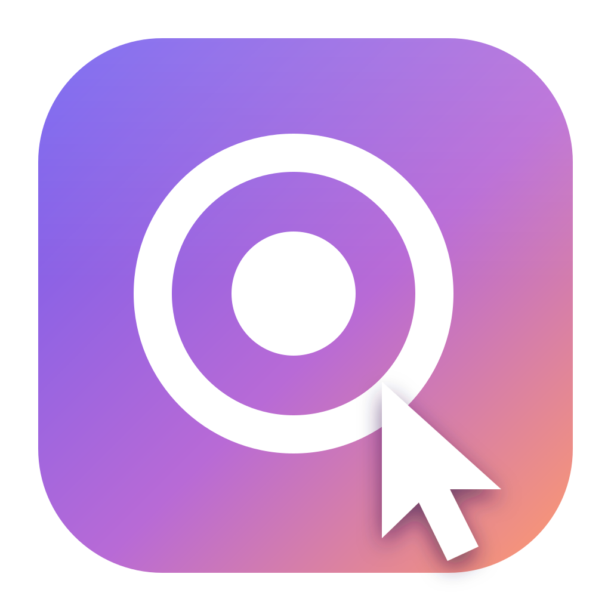

Smooth cursor
A deterministic spring smooths the recorded pointer. Preview and export always match.

Recorder StudioThe open-source screen recorder for Windows that handles the hard parts — automatic zooms, a silky cursor, webcam layouts and fast GPU export. No account, no watermark, no subscription.
Windows 10 / 11 · x64 · Installer & portable
Focus and zoom
Recorder Studio watches where you click while recording and zooms in on the moments that matter. Every zoom is eased and balanced for you.
Clicks become smooth zoom segments on the timeline, following the cursor between clicks.
Double-click the zoom lane, drag the block, click the preview to aim. Done.
Your webcam glides aside when the cursor comes near, so it never covers what you are showing.
1.0× Scroll to zoom — exactly how your viewers will see it.
Camera layouts
Screen and camera are recorded as separate tracks, so you can change the layout after recording — even per clip.
Motion
Shaky cursor paths become a steady glide. Fast camera moves pick up a natural blur. Clicks ripple. All of it is editable after you record.
A deterministic spring smooths the recorded pointer. Preview and export always match.
Change size and style after recording. Add a halo or a click bounce.
Shortcuts and typing appear as clean keycaps — only when you turn it on.
A quiet ripple makes every click easy to follow.
Zooms and pans blur like a real camera move.
Any aspect ratio
One take becomes the wide demo, the square post and the vertical reel. Fill & follow keeps the cursor in frame.
Record & edit
A whole display, one window, or a 9:16 region. The OS cursor is excluded and re-drawn as a vector.
Live preview with an input meter before you start. Missing devices never block a take.
Split, trim, ripple delete and reorder on a thumbnail timeline with snapping and undo.
Give one clip its own layout, background, cursor or volume. The rest stays untouched.
Studio gradients, solid colors or your own wallpaper, with padding, radius and shadow.
Save and reopen a project. Your original recording files are never modified.
Export
Frames are decoded in order with hardware WebCodecs and encoded on your GPU with NVENC, Quick Sync or AMF — falling back to x264 when needed.
Open source
Recorder Studio is MIT licensed and built in the open with Electron, React and FFmpeg. No telemetry, no account, no watermark — your recordings never leave your computer.
# Build from source
> git clone https://github.com/you/recorder-studio
> cd recorder-studio
> npm ci
> npm run setup:win
> npm run dev
✓ Recorder Studio is runningDownload
Free for everyone. Pick the installer or the portable app.
The installer is not code-signed yet, so Windows SmartScreen may ask you to confirm. Checksums are in SHA256SUMS.txt.